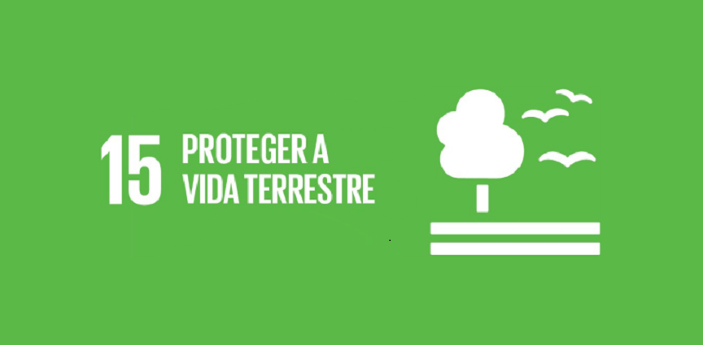

Projeto: Tramandai mais verde
Cidade de realização: Tramandai/Rs
Causa de atuação: Reflorestamento e arborização
Objetivo do Projeto:
O objetivo do projeto Tramandaí mais Verde é arborizar os espaços públicos de Tramandaí e, com isso, propiciar uma melhoria no bem-estar dos cidadãos, bem como contribuir para a melhoria da qualidade do ar e da sensação térmica, entre outros benefícios. Para atingir esse objetivo foi estruturado um projeto em conjunto com diversos parceiros, com a meta de plantar 5.000 árvores em espaços públicos da cidade, em 5 anos.
Parceiros: Sesc, Senac, Sindicato e Prefeitura Municipal de Tramandaí
ODSs vinculados: Vinculados: 15(Proteger a vida terrestre) e 11(Cidades e comunidades sustentaveis)